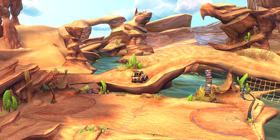
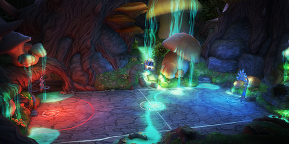
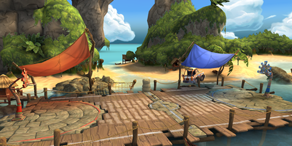
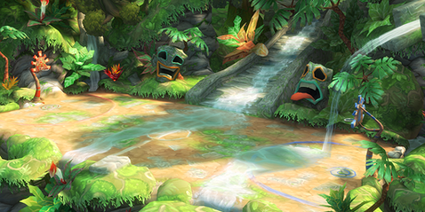
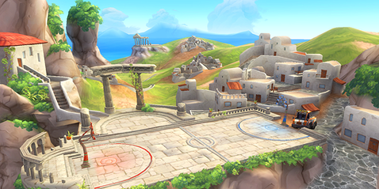
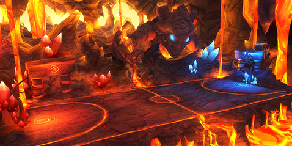

10 |
The Courts |
 |
Totem Rock
Totem Rock is a holy place for the Native Americans of the southwestern USA. Eagle Rock and Wolf Hill stand guard over one of the first HoopWorld sites, which has been rebuilt by the Western team in honor of the Elders. Full Moon Fever
Full Moon Fever is a mysterious clearing found in the depths of the Black Forest. It pulsates with the magic of the land, which is so strong that it has mutated the vegetation to huge proportions and given it eerie, glowing colors. Pier Pressure
Pier Pressure is a forgotten pier on a remote and beautiful Pacific island. The Samba Sunrise team found it and was overcome with a mysterious urge to rebuild it into a ball court, their happiness flowing into the soft ocean currents. Jungle Jam
Deep in the South American rainforest there is a mysterious temple, long forgotten, built over a tremendous source of magical power. The energy of this place fuelled the lost civilizations of the area, giving them great wisdom and courage. Olympus O.D.
Olympus O.D. is one of the holiest and oldest HoopWorld sites, standing isolated on an impossible cliff, overlooking a peaceful Greek village and clear waters. It is guarded eternally by the Kalans, the sleepless watchmen of the Elders. Magma Rumble
In the boiling depths of an active volcano lie the ruins of a magical prison, supposedly sealing the Shadowskulls forever with a powerful artifact. But the artifact seal has been stolen, letting evil loose upon the world. |
 |
 |
 |